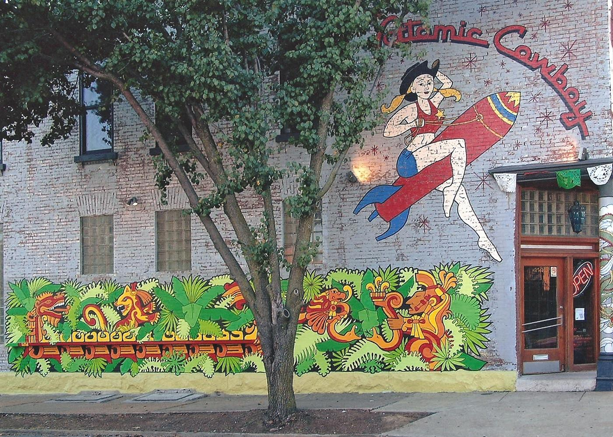

Fly Me to the Moon
Wings
Stop 1 of 5
Welcome to the Compton Hill Water Tower, the newest of St. Louis' three towers.
179' tall
Designed by Harvey Ellis
Completed in 2002
Made from limestone, brick, and terra cotta
Built on the 36 acre Reservoir Park, it was completed in 1898 after a design by
The 179-foot tower is made of rusticated limestone, buff-colored brick and terra
During the World’s Fair in 1904, as many as 5,000 people visited the tower and
Inside, spiral steps take visitors to the top of the tower where an observation
Next Up
Atomic Cowboy Mural
